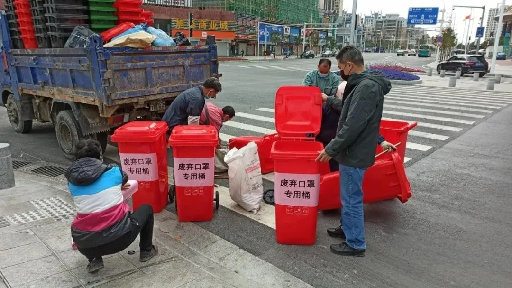
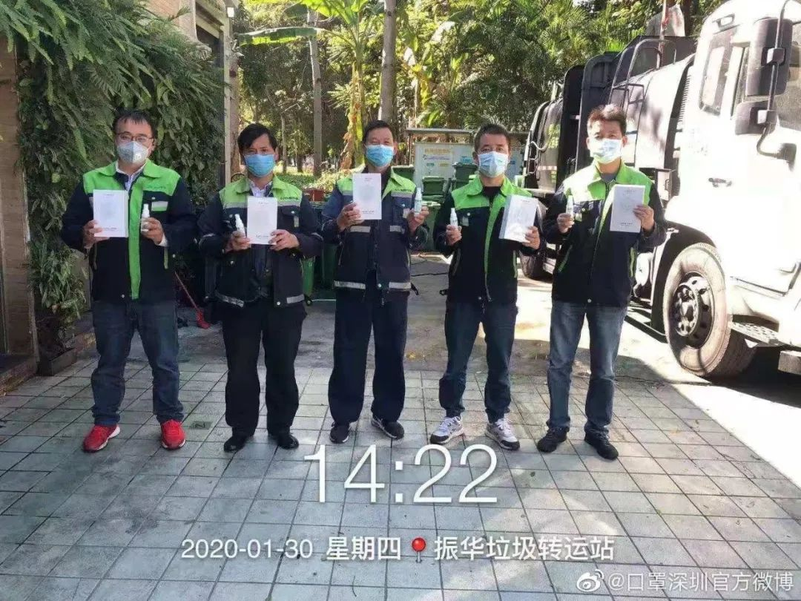
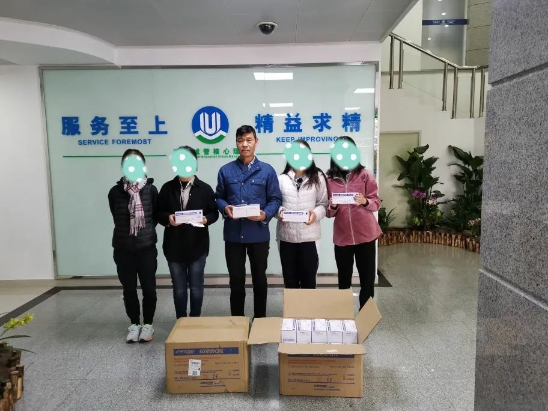

口述实录 | 起初还有点小心思，现在我的小货车已经“停”不下来了
原文链接 备份链接 经过这次疫情，我对《我不是药神》这部电影感触特别深。我明白了平时物资储存的重要性，这样在特殊时期才能派上大用场。 口述 | 赵 勐 整理 | 王仲昀 我叫赵勐，干物流行业的。大年初一下午，我一个人在家睡觉。醒来看到微信 …
“环卫工人还是需要被关注的。”一群高中生创立的“口罩深圳”项目，和一群大学生创立的“口罩珠海”项目，希望在疫情期间帮助环卫工人解燃眉之急。
文 | 甘笠男 蒋敏玉 陈淦博 编辑 | 小豆
早晨五点多的深圳，天还没有亮透，环卫工伟强已经准备出门了。他从上衣口袋里掏出一个叠好的一次性医用口罩戴上。
公司年前发的两个口罩早已用完，售价4.5元一个的一次性口罩，伟强舍不得只用一次。他学着电视上教的，用手把口罩上部的金属条沿着脸部轮廓按了按，已经戴了两天的口罩散发出淡淡的异味。
环卫工人的担忧
“我都不想干了。每天要拉这么多垃圾，这些垃圾谁知道是病人的还是健康人的？要是带病的人的垃圾，我染上了，那我太划不来了。”当时武汉“封城”已有一周时间，新型冠状病毒仍在全国各地肆虐，伟强心里越来越焦虑，辞职的念头也愈发强烈。

防护简陋的环卫工人正在工作（图源：珠海市环境卫生协会）
在北京工作的环卫工雪华跑了好几家超市和药店，都买不到口罩和消毒液，年前工会发放的两个棉布口罩听说也只能防尘。每天下班回到出租屋后，她能做的，只能是按照公司每天叮嘱他们的——多洗手。
2月2日，中国疾控中心传染病处研究员冯录召在国家卫健委新闻发布会上表示，“广大环卫工人、公交车司乘人员等，在岗期间要规范佩戴口罩。” 随后，全国多地陆续发布有关保障环卫工人防疫的通知。
在此之前，已有人注意到环卫工人的防疫窘境，“口罩深圳”、“口罩北京”、“口罩福州”等志愿活动陆续涌现。
王楚妍是“口罩深圳”的7位负责人之一，也是一名高二学生。这个团队7位负责人的平均年龄才16岁，可能是这场全国口罩行动中平均年龄最小的团队。大年三十的上午，王楚妍偶然在微信上发现了一条“口罩深圳”的推送，曾参加过多个志愿活动的她迫切地想加入这个团队。
初步了解情况后，她发现环卫工人的防疫状况不容乐观。“深圳一共有九个外包公司，有一个稍微好一点，每人每天基本上可以平均分下来一个口罩，其他公司，普遍都是过年前发了一两只，年后连续几天都没有管。” 王楚妍说。深圳市环卫局告诉她，政府已经下拨了一万只口罩给环卫工人，但对于深圳市九家环卫公司、八万多名工人的每日需求来说，只是杯水车薪。
2月4日，珠海市环境卫生协会在公众号发布的《关注环卫一线工人疫情防控物资紧缺问题》一文引起了大三学生乔珑轩的注意。他随即拉上同学和好友，成立“口罩珠海”项目，希望为缺乏防疫物资的珠海市环卫工人尽绵薄之力。
在珠海市环境卫生协会和珠海市市容中心的帮助下，2月11日一天内，“口罩珠海”团队收集到了来自2204位环卫工人填写的问卷，结果显示1600位环卫工人买不到口罩，近800人使用的是纸口罩、棉口罩，洗手液、防护手套等物资也极为紧缺。

参加调查的72%的环卫工人买不到口罩
“口罩珠海”的负责人之一，大三学生梁志城说：“我当时看到这个数据确实很震惊。”珠海市内约有一万多名环卫工人，太多的需求没法满足。
一波三折的筹款之路
1月24日成立，1月25日发出第一轮捐赠通告，1月27日中午，“口罩深圳”宣布第一轮募资完成，共计募得来自近1000人的约38000元善款，超额完成了原定的3万元目标。
为了规避法律纠纷，“口罩深圳”团队还向5位律师咨询了关于慈善法的相关事宜，在律师的建议下，他们着手联系慈善机构和NGO。1月27日，深圳市广电公益基金会相关负责人主动联系了他们。
“基金会一般走的是报销制，但是由于我们是学生，家里也不一定有这样一个可以垫付的款项，而且特殊时期工厂也不一定能开出发票。”王楚妍说。经过两天的磋商，“口罩深圳”最终决定与深圳市广电公益基金会建立挂靠关系，共同管理监督资金流向并分别审计。
1月29日，“口罩深圳”又进行了一次募捐。两轮募捐下来，“口罩深圳”筹得善款共73000多元。
另一边，起步较晚的“口罩珠海”的筹款路程却一波三折。
“其实一直都有一个很棘手的问题，就是怎么能让更多的人帮我们宣传。”为了让更多人关注到珠海环卫工人，梁志城和其他5位队友想尽了办法：联系珠海各大学官方公众号，和珠海慈善总会以及深圳广电基金会沟通等，但基本都被“婉拒”了。
珠海慈善总会通过电话告诉梁志城，因为疫情严重，慈善总会是由市里或省里统一指挥物资调动和捐款使用，目前没有精力和个人或者组织合作。广电基金会也以相同的理由婉拒了“口罩珠海”的合作需求。
更糟糕的是，2月16日，“口罩珠海”的公众号被封了，一些想要捐款的热心人士告诉梁志城：“推送链接看不了了。”
乔珑轩和梁志城猜测是因为口罩小助手微信号近期才进行实名认证，而短时间又高频接受了善款，导致被微信平台冻结收款功能，所绑定的公众号也被暂时封停。他们立即向微信客服进行了申诉，目前还在等待处理结果。

“口罩珠海”受到热心市民的鼓励（图片由受访者提供）
即使宣传、对接方面坎坷不断，“口罩珠海”团队也遇到了不少暖心事儿。左心房公益组织、手握手公益组织看到他们的推送后主动联系了他们，表示愿意帮忙宣传推文，并给“口罩珠海”负责人分享了不少公益项目运营的经验。
“口罩珠海”团队还受到了不少爱心人士的鼓励。令大家印象最深的是55岁的张伯，已经在广州从事了21年环卫工作的他，幽默地称自己为“环卫大学毕业生”。
前不久，张伯刚给湖北捐款500元，拿不出更多的钱支持“口罩珠海”项目，他有些懊恼：“如果早一点就好了，钱就不会送到湖北了。”疫情期间，张伯还用开玩笑的方式来缓解其他环卫工人的紧张情绪：“每个环卫工人都自带‘消毒’器官，病毒到环卫工人身上就都被这个器官消化了，你们只管放心就是，但还是要注意防护。”
从业21年来，张伯受过不少白眼，得知一群大学生在帮助环卫工人募捐买口罩时，张伯有些惊讶，但更多的是感谢和感动，“（他们）关心我们环卫工人，我很感动。”
虽然现在筹集到的资金离3万元的目标还有一定距离，但梁志城和队友们并不觉得沮丧，“不管筹多少，能让大家关注这个群体，我们已经尽了力了，我觉得这个活动的意义也已经达到了。”
400多个电话挨个打
疫情之下，医用防护物资货源吃紧，不少厂商都被征用专为湖北疫区供货。街上的药店纷纷贴出“口罩售罄”的通知，要帮深圳、珠海的上千名环卫工人购买合格的防护口罩并非易事。
赵崇琳和“口罩珠海”的队友们先在各大批发平台搜索无果，后又转战贴吧、朋友圈、微博，终于得到一份防疫物资生产商名单。表格很长，上面有400多个厂家的联系方式，赵崇琳花了两个小时，挨个给厂家打电话。
然而，大部分电话并没能接通，接通的电话要么直接挂断，要么就是在听完赵崇琳的来意后便抛下两个字——“没有”。赵崇琳开始变得焦虑，“很多货源不是被征用了，就是起批量要在5万甚至10万以上，而我们买口罩一次只能买几千个。”
另一方面，有“三证一标”的生产商十分难找，市面上大量的劣质口罩货源也给赵崇琳的物资采购带来了困扰。为了让环卫工人放心地用上口罩，赵崇琳在采购之前还会要求厂家出示生产资质证明、物资照片等。
口罩等防护物资供不应求，平时售价1元都稍贵的一般医用口罩的价格也在成倍上涨。“采购价格一直在变，货源也一直在变，如果今天不和厂家谈好价格下订金，第二天口罩或许就没有了。”赵崇琳告诉南都周刊，“一周前我们刚了解的时候，口罩大概3.5元一个，现在大部分厂商的价格已经涨到4.5。”
相比之下，起步较早的“口罩深圳”就幸运得多。1月底，王楚妍和队友们联系到的两家防疫物资生产商给出的口罩单价在0.5-0.7元内，后来再联系到的厂家，价格就涨到了2.5-3.8元一个。他们收到的73000多元的捐款共购买了两万多个医用口罩和1.5吨84消毒液，其中有近2000个口罩是来自爱心人士的捐赠。


环卫公司将“口罩深圳”筹集的防疫物资发放给环卫工人。（图片由受访者提供）
从1月29日到2月17日，陆续有五六批物资抵达深圳。最早送到环卫工人手中的是520个由深圳企业捐赠的爱心口罩。29日上午，物资发放组的钟木腾租了一辆货车，从深圳罗湖区去到东莞领取口罩，再将口罩送到龙岗区的一家环卫公司。
“当时大概有20个环卫工人在等待，大家搭把手分发口罩。”钟木腾将自己早上从工厂那边学来的口罩佩戴方法，一步步演示给在场的环卫工人，并强调了几个注意事项。“当时心里有点难受……环卫工人还是需要被关注的。”钟木腾说。

“口罩深圳”团队将口罩送到深圳市环境卫生管理处。（图片由受访者提供）
目前，“口罩深圳”项目已经进入收尾阶段，最后一批共12000个口罩将在近期发出。
而“口罩珠海”也已筹到善款约14900元，据悉，左心房公益组织有意向其提供资金资助，北京师范大学-香港浸会大学联合国际学院（UIC罗平基金会）基金会表示愿意资助“口罩珠海”3000元，防疫物资购买仍在洽谈中。
回忆起半个月来的忙碌，王楚妍感叹道：“很欣慰自己可以出一份力。”当记者再次联系到深圳环卫工伟强时，电话那头的他大声地说：“我们有口罩了！单位也发了，自己也买了！”
（应采访对象要求，文中伟强、雪华为化名）
来源｜南都周刊
END
欢迎分享到朋友圈，如想取得授权请邮件：newmedia@nbweekly.com。如果想找到小南，可以在后台回复「小南」试试看哦~

原文链接 备份链接 经过这次疫情，我对《我不是药神》这部电影感触特别深。我明白了平时物资储存的重要性，这样在特殊时期才能派上大用场。 口述 | 赵 勐 整理 | 王仲昀 我叫赵勐，干物流行业的。大年初一下午，我一个人在家睡觉。醒来看到微信 …
原文链接 备份链接 医护人员冲锋在一线有需要，我们国企和其他企业就要一起做好后勤保障工作，挑起企业抗击疫情的责任担当，相信众志成城、共克时艰不是一句空话，大家一起努力，疫情终将过去，一切都会好起来。 口述 | 周 道 整理 | 周 洁 小 …
原文链接 备份链接 你印象中的武汉是什么样的？ 这座位于华中地区的省会城市充满着生命力，夏天够热，热干面是他们最常见的美食，闲下来的老人们会聚在街头巷尾打牌，春节是他们最热闹的节日，有归乡的年轻人，有早早就置办年货的老人，有火红的对联和热 …
原文链接 备份链接 总体而言，港人对待疫情，后来就没有内地那么紧张了。我妈妈讲，她觉得作为一个香港居民，自己最大的感受是彷徨。她抱怨道，在香港，没工开等于没饭吃了；公司起先通知放假到24号，何时复工再议，而现在仍然是等通知的状态。 …
原文链接 备份链接 距新型冠状肺炎疫情公开已经过去二十多天了，从最初的混乱和恐慌至今，人们似乎在一点点变得平静。生活的节奏被打乱，取而代之的是对 “非正常状态” 的逐渐习惯。对很多参与在捐助行动里的人也是，紧张感从没消失，只是变得可以适 …